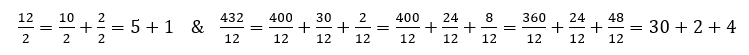

The Problem with Education in Mathematics: A Flowchart
At this stage in the (d)evolution of mathematics education in the United States, just putting math in the title of an article might be a death sentence. There is so much that is so horribly wrong in the field that I don’t even feel remotely comfortable in making an attempt to describe it in a paragraph. The best option I can think of is to use what I would consider the best description I’ve found thus far, from a piece called "A Mathematician’s Lament":
“Sadly, our present system of mathematics education is precisely [a nightmare]. In fact, if I had to design a mechanism for the express purpose of destroying a child’s natural curiosity and love of pattern-making, I couldn’t possibly do as good a job as is currently being done—I simply wouldn’t have the imagination to come up with the kind of senseless, soul-crushing ideas that constitute contemporary mathematics education.”
I will start with a story which I believe contains, both luckily and unluckily, doors to some of the more important rooms in the house of horrors that is “contemporary mathematics education”. When I was a child, I loved math. My father was both a carpenter and a programmer and he felt it was important that I learn as much as possible outside of school. I thought back on this when I grew older and expressed my gratitude for his trying to give me an edge, he laughed at the notion that the goal was to give me some sort of advantage. He said he taught me math because he thought they’d teach it wrong. His biggest mistake was stopping. I loved the patterns in division and multiplication, and I devoted a lot of time to finding them.
Instead of my times tables I used this: The Pattern I was looking at, from 1x1 to 50x50. Colored from Dark Gray (0) to Light Gray (9):
{kind=link}
{kind=link}
It took two decades to find out that what I was stumbling around in is something akin to Vedic Math, an Indian perspective on mathematics that deals with patterns in number systems (not an endorsement of Vedic math). I have no intention of showing off and there was no positive end to this story, the point of bringing this up was to say that my teacher promptly scolded me for not memorising my times tables. She discovered I hadn’t when she found I was slow to give answers, because I made the mistake of thinking math wasn’t meant to be memorised. I remember when I got to the procedure of long division. I knew how to do long division, but for most small problems I had been doing division a different way, I could start with either the 1’s place and move higher or with the highest place and move lower, because I had been taught that: 
{kind=link}
For most of the problems we would do, I found it easier to use this method than long division. I failed my first test in my academic career because I did the division in my head. A real teacher actually spent the next 2 months drilling me to stop doing math in my head while slowly convincing me that my father had taught me incorrectly. In her defense, an 8-year-old explaining this method to her probably seemed annoying and unwieldy, and in my father’s defense, he never intended for this to be the go-to method of division—it was simply a means to teach me how numbers worked in general. However, I will say that despite the fact that she taught us how to add fractions, she was not able to make the connection between addition of fractions and division and soon I couldn’t either.
By the time I entered middle school I was in remedial math. I no longer cared for the subject at all. My father was working two jobs and no longer had the time to tutor me, and my mother, while she was very intelligent, had dropped out of high school in 9th grade and knew nothing of algebra. Every year I entered a new math class, I was entirely underprepared. If I decided to try, I would ask teachers for help only to be told that I should have learned that in the years prior. These classes were beyond unmemorable, I remember feeling lost 95% of the time. I simply wasn’t equipped at that point to tackle the material they were putting in front of me. I eventually found a teacher in 9th grade who suggested that it didn’t really matter if I understood anything that came before, I just needed to memorise the rules and pass the test. This would be my academic understanding of math for the next ten years, and it is now painfully apparent to me that I can count on my fingers the people I know who didn’t share this perspective while they were in school.
This story might be, by its nature, biased and anecdotal, and I don’t believe that most young children begin with a love of math for school to ruin. However, what I wanted to express is if school did this to me, given where I started, what does it do to other kids? Before returning to the anecdotal, we can use statistics to illustrate it.
- 65% of college students who take remedial math drop out.
- 1 in 3 college students who enroll in calculus fail or drop.
- 1 in 3 or less high school seniors don’t score proficient in math.
- As many as 60% of college students who intend to study a STEM subject transfer out and the rates get worse as the college becomes more selective.
- Only slightly less than half of U.S. Eighth Graders can place fractions in ascending order even with use of a calculator.
- 60% of community college students must take at least one remedial course before enrolling.
While my partner and I were running our college’s honors program, we often acted as the intermediary between the administrative bureaucracies and the students, giving us a bird’s eye view of students and their interaction with education. Without a doubt, math was the most painful. Whether they were in remedials or in advanced mathematics, it was the most painful. Whether their degree was built on math or if math was simply required, it was the most painful. It wasn’t described as annoying, it wasn’t described as frustrating, it was described as painful. People very literally celebrated finishing their required math classes.
While there, I was pursuing a triple major: Computer Science, Accounting and a Cert. Program in Financial Markets with the intent of moving on to pursue an M.S. in financial engineering from NYU. My variation in majors, combined with my position at the school, allowed me to exceed both credit limitations and the other students’ exposure to classrooms and professors. I once saw a PhD economist begrudgingly apologise to the class for the requirement to use math on an exam. I spoke to her afterward about this and she gave a heartfelt explanation of how students are simply not prepared when they come to the class. They’re generally missing most of the necessary prerequisites so if you don’t ease them into the math like a toddler into a pool, they’ll just shut down. My professors in accounting, business law, and stat/general sciences all had the same sentiment.
The worst was my precalculus class. I will preface by saying that I had been working with math for some time at this point. By the time I went back to college I had already worked at a brokerage firm and been a portfolio manager. I had been working with game theory and probability before and I thought I was fairly comfortable with math. When I entered that class, I was in the process of getting an undergrad stat paper on the Pareto Principle ready for publishing with the help of some of my professors. This process was moving along fast as I had hoped to present it at conference the next year. By no means did I feel any fear entering that class, but I felt awful leaving that day and every day after.
The professor treated us like kindergartners. He provided assigned seats, didn’t allow the use of laptops for notes, and had a general sense of condescension that seemed to be sourced from a general dislike of us being there at all. The assignments reflected this perspective, he had a weekly assignment called “Newspaper Reports” which were so painful in memory that I decided to go and find the video he showed to introduce them. It’s so bad that I don’t think it’s fair to him to show it just yet.
Each week we needed to find 3 articles which had math in it, not articles in which math was the topic, articles which contained math, this could be a count of something or a percentage. You’ve read that correctly, and it means exactly what you think it does. That meant if it had a count of people dead in a bus crash, that was an acceptable article to bring in. You’ve read that sentence, now parse it… you had to bring it in. We cut out newspaper articles and brought them in like some morbid arts and crafts project. It was in these moments, cutting out newspaper articles while on the phone running my business (which developed geopolitical and financial research to sell to small hedge funds), that I thought seriously about just dropping out of school. There was something surreal, demeaning, and terrible about walking a potential client through the potential outcomes of a Russian Sukhoi Su-24 getting shot down over Turkish territory while cutting out the article about it with craft scissors.
Absent of these truly senseless assignments, the class was bad on its own. I was surprised to find myself unprepared for the material. It was in this class that I realised I was never actually introduced to trigonometry outside of what my father taught me while I was working as his carpentry apprentice. The professor was not going to teach the fundamentals of trigonometry I was expected to know, so his suggestion was that I drop the class and take a remedial. I had a 4.0 at this point, dropping the class wouldn’t just hurt, it would ruin my plans. I want you to think as hard as I did about this notion. That going to where I would belong, such that I would get the best education, was going to ruin me. I was on a strict schedule to make the most out of my grant money. I couldn’t afford to drop thousands of dollars on another semester and not graduating on track would affect future grant offerings.
I ended up returning to my 9th grade teacher’s advice, just memorise the rules and pass the exams. The moment I stopped trying to learn and just focused on remembering the rough equivalent of flash cards, I began maintaining my grades. I got a 3.9, losing the 4.0 in-part because I submitted a newspaper report late. I was at an academic conference and he wouldn’t let me submit it via email. I had to actually submit the cut-out paper. I want to take a moment to say that when I was writing this, I had to really dig to find the video mentioned earlier and in doing so, discovered some interesting details about the professor. He’s likely one of the more credentialed individuals I’ve ever met. He was working with computer vision since its introduction as a concept and he’s published dozens of papers on some heavy topics in discrete mathematics and graph theory. I don’t think he was necessarily a bad guy, I think the weight of completely underprepared, disinterested students and the demands to get them their required math credits dragged him kicking and screaming from lofty heights down to bitterness, frustration, and this:
[edit- I’ve removed the video out of respect to the professor]
Needless to say, upon entering calculus, I was woefully underprepared. I almost dropped (just like ~66% of my peers apparently), but instead decided to speak to my professor, who turned out to be one of the best teachers I’ve ever had. I told him I was thinking of dropping, but that I didn’t want to and asked what I should do. He pointed me to a list of prerequisites I could study on my own, encouraged me I was capable, and was happy to speak with me after class to clear up any confusion. He really did try to teach us but hit walls with the absolute lack of foundational prerequisite knowledge in order to understand calculus. He shared with me what my economics professor did as well: high school math had failed multiple generations of students. I worked hard in that class, I stayed up late—not memorising rules, but trying to understand why they worked and what the results communicated. I got a B on an exam and the same day went to see a counselor. They asked how I was doing in calculus and I answered with a smile only to be given an “I told you so” lecture on how they said I shouldn’t have taken it. I had never been so proud of a grade, but I was being legitimately punished for feeling like I was really being challenged and outside of my comfort zone. When I realised that the next few years until graduate school were going to be doing the opposite of that if I wanted to succeed, I decided to leave college early and instead focus my attention on solving the problems I had encountered instead of continuing with finance. Calculus was the only final I studied for that semester, I got a C for the course, which is exactly what I deserved given what knowledge I came to the class with. I would love to go back and take it again if it wasn’t so obscenely expensive and frustrating to go to take a single course. Especially now that I’ve since spent a few thousand hours studying math on my own and have been (slowly) writing a book about what I’ve learned.
Since I took that last final, in addition to relearning math, I’ve been learning about where this system (not just regarding math) goes wrong, where it goes right, and why. I don’t want to make the mistake of throwing out the baby with the bath water, so I want to clarify I’m not about to go on to say that college or school in general is nothing but a broken, money-making racket and entirely irredeemable or that my experience was entirely universal. So now that I’ve given the anecdotal sob-story and the appropriate disclaimers, I think we can pick some pieces out of here and put them under the microscope.
Proficiency in math is not defined by memorisation, it’s complemented by it.
Let’s start with my teacher who confused memorisation of times tables with understanding multiplication and being able to do long division with understanding division. The extent of the concept I’m trying to express might be demonstrated at its logical extreme with another anecdote. As I’ve mentioned elsewhere, I had the opportunity to study interaction with games by isolated, rural Cambodian children. While there, I volunteered some time teaching them math at the community center. I was surprised to find that many of the students didn’t actually understand multiplication. They learned it as a series of flashcards, 1 x 1 = 1, 2 x 3 = 6. I didn’t know this at first and only found out when I gave them 3 x 2 instead of 2 x 3. When I showed them that 3 x 2 is equal to 3 + 3 and 2 + 2 + 2 and spent the next 25 minutes going through examples of this, there were students who actually looked angry. Some even spent time after class flipping through their notebooks trying to turn past questions into this format, showing it to me to be certain that all multiplication questions could be rewritten like this. Interesting enough, the “smartest” boy in the class, who had memorised his times tables up to 12, couldn’t get it. By the time I left, he was only just starting to get it. It reminded me of a friend, a sergeant in the U.S. Marine Corps, who told me that they actually prefer to get recruits who don’t have experience with firearms, because it’s easier to train good habits than it is to get people to forget bad ones (see proactive interference in psychology).
Some of the younger students had this same problem, but with addition When I realised they didn’t actually understand the operation, I drew a number line across the chalkboard, and then stood next to certain numbers—pointing and then saying: “Plus One!” and stepping forward to the next number or “Plus Two!” and moving forward 2 numbers. Most of the kids got it by the end of the lesson and one girl was pointing out to her friend that you can “add ANY two numbers that way”. This was something, that at 7 years old, she hadn’t considered. I managed to introduce them to subtraction for the first time by the end of class using the same method. The next day, despite the language barrier, it seemed that she was considering what happened when you subtract and end up below 0.
This is obviously the logical extreme, but I believe it does a reasonable job of demonstrating a common problem: thinking that sterile memorisation is a valid substitute for understanding. To show this problem again, I’ll use an example that I find comes up a lot when talking to people about math. I’ve seen advanced high school students, math majors and engineers confused about how to explain why:
This is taught as a rule, if you see a negative in the exponent, just get rid of the negative in the exponent and then put the term under a 1. If you ask why, you’ll very often find that no answer is available—sometimes even from teachers. It’s just what you do. What is a negative exponent anyway? It doesn’t really make any sense. A base x cubed or x^3 = x * x * x makes obvious sense, but how do we multiply a number by itself -3 times?
Well, we don’t really, there’s no way to really perform that operation as we mechanically define it. However, in less than 3 minutes we could get a pretty good understanding of how we use algebra to discover what negative exponents resolve to. Let’s start with acknowledging that we can add the exponents of base terms which are multiplied.
This above is often taught as a rule, so if you understood this as just something you do, rather than understanding why you can add exponents of like base terms, you were never going to move forward with understanding negative exponents. If you can understand what’s happening above, then you can understand what might happen when we subtract the exponents of like base terms when they’re divided.
A second, similar spot where students have the same problem of its just what you do is with fractional exponents. How do we multiply something by itself one half times? It doesn’t really make any sense as per our usual understanding of exponents. Again, if we build on what we have above, it’s not ludicrously difficult to understand.

Think about the pattern there and then think about what a root operation returns:
Just look over those patterns, if you get it, great. If you don’t—it’s not necessarily your fault, you likely just missing some of the prerequisite knowledge. My point is this, if you teach math as a cipher, if you see this do this, and don’t teach why, you’re kicking the can down the road. It might not be a problem for this test, but it will be a problem for learning anything built on that lack of knowledge in the future. Go on forums for the GMAT test and you’ll find explanations of probability that explicitly show that some students don’t even really understand division, and these are students preparing for the GMAT, a test meant to act as an entrance test for graduate school. Most students don’t even understand why the order of operations exists, and sometimes what the order of operations even is unless you mention PEMDAS. Of course they’re going to fail, distrust and hate math—they don’t even understand what they’re being shown. Any sufficiently advanced technology will be perceived as magic, and in this case, it’s magic they’re not even interested in. By the time math becomes really important and relevant to what they’re learning, they don’t have the time to go back and really learn it conceptually. I’ve spent a lot of time studying metacognition, which deals a lot with feeling of knowing in learning and memorisation. It’s important to realise that feeling of knowing is often illusory and that we are often passive observers to information. Our brains are optimised, not to explain the world around us, but to feel comfortable and safe, which often means seeking protection from reputation damages. If given the option between a commonly accepted cached thought and real understanding, we will generally pick the cached thought and hold on for dear life. This is true for all domains of knowledge, not only math. It’s just that math, with all of its complicated notation and abstraction, is particularly vulnerable to this preference at all levels in the field. Math cannot be taught using a flowchart alone, if you see this do this should only be used to anchor, assist and rehearse conceptual understanding.
Concepts in math aren’t explicitly linear or modular.
Now we’ll target the teacher that could not make the connection between addition of fractions and division. When I was getting started writing my book on relearning math as an adult, I spoke to professors and mathematicians about where to begin. I ran myself ragged for weeks, eventually realising that mathematics isn’t a pyramid of concepts, it’s more like a circle (or series of circles) with a bunch of bridges between the concepts. You kind of have to just pick a palatable spot to start and then iteratively go over what you know as you learn more. For example, in order to understand counting, you need to understand Boolean logic and Set Theory. In order to understand number systems, you need to understand counting, iconology and exponentiation. In order to understand exponentiation, you need to understand number systems and operations. In order to really understand operations, you need to understand number systems and set theory…
That being said, I can refer to Bertrand Russel’s “The Theory of Logical Atomism”, which poses the problem of “where is the river Thames?” Our ability to discriminate between and assign attributes to objects isn’t just incredibly important in our ability to understand and perceive the world, it’s the very basis for it. Sure, in reality, we can’t actually define EXACTLY where the river Thames ends and begins, we can’t actually define EXACTLY when a sapling ceases to be a sapling and becomes a tree, but in the spirit of Russel’s late-in-life conclusion: thank god that we can’t, otherwise language would be quite unmerciful.
I’m not saying that we should give up on the idea that math can be taught in modules, it kind of has to be, what I’m saying is that we probably need to do a better job of interleaving modules. When we study neurobiology, we accept that most brain function isn’t central, but we also accept that when we talk about how the anterior singulate handles x and how the amygdala handles y, that it’s a way of anchoring what it is we’re talking about long enough to actually say something. However, when we do so, because of how we interleave learning about modules or buckets, as its often called, we know that we’re just using language effectively enough such that we can say “The River Thames” and we stand a chance of being understood.
Along with my study of feeling of knowing, I’ve been studying memorisation on its own and I’ve been directed to a growing body of research that suggests depth of processing is an essential means of anchoring memory and conceptual understanding. Depth of processing might be best defined as thinking about a concept or logical atom of information from multiple perspectives. Just learning about adding fractions is one thing, but if you want to anchor that memory conceptually, build a bridge to the island: expose the student to more than one perspective. Instead of just stopping with “how many twelfths of the pizza did Thomas eat?”, maybe when we move on to work with percentages and division we keep iterating back over the addition of fractions in similar settings and iterate over division when we deal with percentages. I understand that a lot of the U.S. Common Core system is meant to address this, but the fact that the public argument has been more about just “trusting educators” or “trusting science” rather than explaining what it’s actually trying to do makes it seem like it’s just a more complicated set of cached thoughts that educators are working with. I’ve spoken with and tutored students who have been exposed to it and I will say that I’m not optimistic. I’m not seeing that students are sufficiently prepared to encounter the concepts they’re being shown even when they’re “excelling” in terms of standardised test scores.
Math is hierarchical and test scores don’t reflect or incentivise understanding.
We’ll now look at what happened when I entered middle school math, high school remedials, and college precalculus and calculus. Even though math is not explicitly modular, it is hierarchical in nature. If you study abstract algebra and develop an understanding of the nature of operations on numbers, it becomes obvious that concepts in math are built on other concepts in math. It’s just that the graph of mathematical concepts is often bi-directional. It doesn’t always flow in one direction, you have to kind of jump back and forth developing proficiency before you move on to higher order concepts. You need to understand addition to understand multiplication, you need to understand multiplication to understand division and exponentiation etc. I’d argue that at least 99% of the topics I’ve encountered in math and felt totally lost and helpless in, whether it be tensors or double integrals, only left me feeling that way because I didn’t have the necessary prerequisites for understanding them. I encountered double integrals without really understanding integration and geometry. I encountered derivatives without really understanding functions. I encountered tensors without really understanding matrices in linear algebra. Once I went back and really felt I conquered those concepts, I had no problem moving forward.
What I believe is often happening, is that tests’ potential damage to students’ records is incentivising, in the best case, short cuts and quick memorisation and, in the worst case, total avoidance of classes. Richard Rusczyk, a math educator and founder of the Art of Problem Solving, found that many STEM students were actively avoiding classes that would contribute or be essential to their education in order to avoid damage to their GPA. During his time at Princeton, he saw students getting 60s on exams and deciding to just change their major to avoid any further damage to their academic career. In many colleges, people are sometimes just dropping out period. This pattern is especially dangerous today, given the truly massive population of adults returning to school. I’m not saying that tests need to be abandoned, but what we need to consider is what we’re incentivising and the value of tests in the first place: which is finding gaps in knowledge so that we can address them, not punish them.
This pattern of satisficing, this sacrificing understanding for short cuts and sterile memorisation, hurts students exponentially as they continue through their math education. As we can see from the table below, where Reading at each grade level seems to remain relatively stable (and unacceptably low), proficiency in Math drifts from unacceptably low to absurdly low. I truly believe this reflects the kicking the can of actual understanding down the road for the next teacher to deal with. Then students interact with math and think “oh, I’m no good at this” and shut down or leave.
Speaking to calculus professors, they all seem to have the same story of students coming in with great grades in high school or college precalculus and hitting brick walls in calculus. The SAT, GMAT, Regents, and Class Finals are not actually reflecting proficiency accurately, they’re reflecting memory of procedure. It’s not to say that these tests never act as a useful metric, but they’re definitely not communicating what we think they are, and worse yet, the answer from many administrators is usually to suggest that the classes are too hard rather than to suggest that admissions might not be using great metrics. I’ve tutored kids with excellent scores, their understanding of math is often built on stacks of flashcards of rules to remember but the kids that seem to really understand it and not hit painful walls are the ones who either see math as a useful tool to solve problems outside of the domain of math or as an interesting subject on its own.
Math needs to be relevant
Studying memory has led me to study game theory and the science of motivation. If there are any predictive factors to really look at regarding how well someone will do in learning or remembering something, it is interest and relevance. It should be obvious, we don’t learn things well when we don’t care about them. Why remember how to use a hammer if you never have to deal with nails. We teach math as this cue response subject and I’ve had many painful moments watching people be totally incapable of applying what they most definitely already understood and learned (this includes myself from time to time). As a close friend once said about computer science: “we need less programmers and more people who do things and also know how to program”, I think that the logic holds for math. Instead of keeping math sterile and separated from other subjects for most of the students’ education, maybe teach it by connecting it to other subjects they actually care about. To the despair of the writers of elementary textbooks I will have to say that examples about apples, pizza and chairs at the dance don’t really cut it. I learned more about auction theory, game theory, and general math by trading on world of warcraft’s auction houses as a kid and trading on the stock market as an adult than I ever did in school. Now that I have the relevant interests, I don’t mind watching a lecture on the subject while I cook my breakfast.
Conclusion
When you have underprepared students with misunderstood cached thoughts tackling a subject they don’t understand, need, want or care about, you end up with dissatisfied teachers, dissatisfied students, wasted money, wasted time, and most importantly—you damage the potential for future interest in what may be one of the the world’s most important scientific pursuits by associating it with a level of anxiety and disinterest usually only reserved for taxes. I won’t pretend I have all the answers, I only intended to shine a light on the interconnected web of potentially avoidable problems and hope that the resulting perspective might act as inspiration for solutions. I think my most distinct conclusion is that concepts in math aren’t explicitly modular, relevant, linear or unidirectionally dependent so the board of education may want to consider using tools other than flowcharts to solve related problems.
Some stuff I referenced: